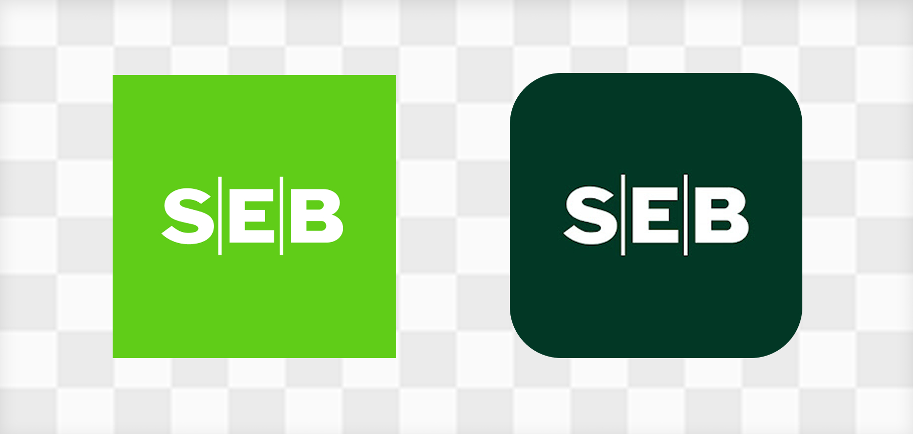
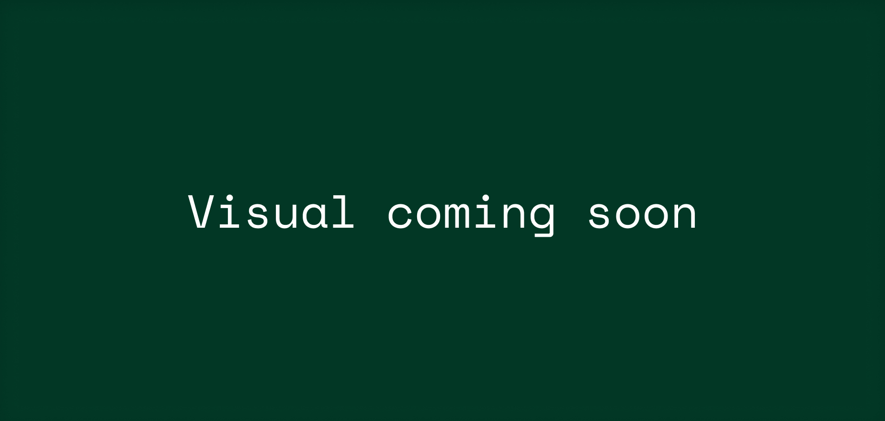
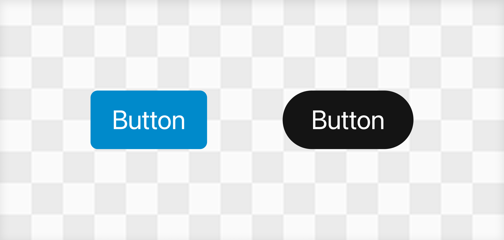

Mobile App Global Rebrand
Project for SEB
In progress

Project for SEB
As this project is still ongoing, certain internal details have been excluded. This case study includes only publicly available data and focuses on high-level processes.

SEB is one of the leading financial services groups in the Nordics and Baltics. As part of a massive strategic shift, the bank is undergoing a global rebranding initiative. My role is to lead the visual and structural implementation of this new brand identity specifically within the mobile app experience - the primary touchpoint for our digital-first customers.
When a global bank rebrands, it's not just about swapping a logo and updating some hex codes. The brand needs to live and breathe in the digital products customers use every single day to check their balances, pay bills, and manage their lives. The mobile app is the most intimate space for this new brand to exist, meaning the execution has to be flawless, accessible, and deeply integrated into the user interface.
The main tension of this project lies in balancing radical change with familiar comfort. Banking apps are utility tools; users rely on muscle memory to get their tasks done quickly. A complete visual overhaul risks disorienting them.
Furthermore, from an architectural standpoint, we couldn't just flip a switch. We had to figure out how to build, test, and implement a brand-new design system while keeping the legacy design system fully functional and "breathing" in production until the transition was complete.

Familiar structure, entirely new skin.
The aesthetic direction leaned heavily into a clean, modern Scandinavian minimalism - stripping away visual clutter and prioritizing functional elegance. We wanted the app to feel fresh, modern, and aligned with the new global brand guidelines, but the underlying UX patterns, navigation flows, and interactive behaviors remained virtually untouched.
If a user knew how to make a transfer blindly in the old app, they could do it just as easily in the new one. The visual language changed, but the syntax remained the same.

Having spent years dissecting the architecture of design systems - going all the way back to my university thesis on the subject - this was a fascinating challenge. Building a new system from scratch is relatively straightforward. Keeping a legacy system alive, pushing updates to it, while simultaneously mapping and building its replacement right next to it, is a massive logistical puzzle.
We essentially created a parallel UI universe. We mapped every existing component (buttons, cards, input fields, modals) to a newly designed counterpart. This allowed developers to gradually hot-swap components out in phases rather than attempting a catastrophic, all-at-once migration.
The technical balancing act was by far the heaviest lift. Maintaining two design systems simultaneously requires constant communication with the engineering teams to avoid version control nightmares.
Additionally, banking apps have incredibly strict accessibility standards. The new brand colors and typography had to be rigorously tested to ensure they met WCAG contrast requirements across both Light and Dark modes. Sometimes a brand color looks incredible on a billboard but fails a contrast test on a mobile screen, requiring us to carefully tweak the digital palette without losing the core brand essence.
Because the rollout is happening in calculated phases, the transition has been smooth so far. We are successfully deploying the new visual identity without causing spikes in customer support tickets regarding "missing" features or confusing navigation.
Learn more about the rebrand and its scale at www.seb.io
This project is a masterclass in scale and restraint. As a designer, the instinct is often to burn everything down and start fresh, but working on a product of this magnitude teaches you the value of incremental, calculated evolution. It's testing my ability to manage complex UI architecture and proving that a great rebrand isn't just about how things look, but how seamlessly you can transition your users into a new era.